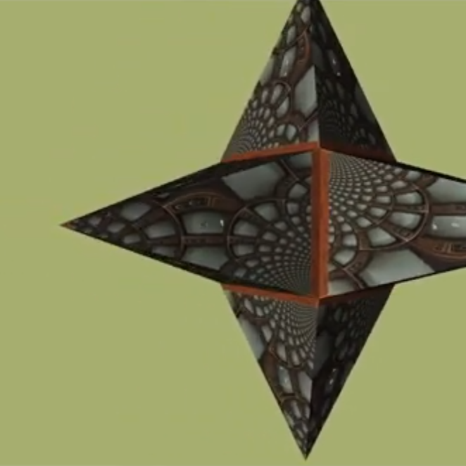
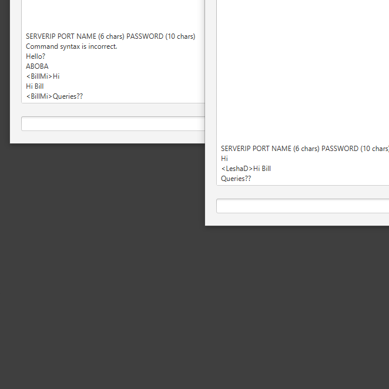

Обо мне
Учусь.
Занимаюсь всякой всячиной.
Пытаюсь сделать свой игровой движок и игру.
Борюсь с архаизмами в математике.
140 IQ.
Люблю:
C
DirectX12
LBM симуяцию жидкостей
MASM
Box2D
PhysX
Не люблю:
Базы данных
Современную математику
Навыки Умею хорошо в:
C
Умею нормально в:
C++
C#
JS
SQL
MongoDB
HTML
CSS
Java
DirectX11
DirectX12
HLSL
Box2D
LBM симуяция жидкостей
Умею плохо в:
Python
MASM
PhysX
Примеры работ

Первый прототип моего графического движка достигнувший значимых результатов.
Он был способен отрисовывать видимые модели с динамическим освещением и отсекать не видимые.
Была система объектов и компонентов, предусматривалась возможность для модификации, использовался DirectX 11 версии.
А также сложность всего написанного мной кода не превышала линейную.
Он был быстрым и ультра небезопасным.
Одна из множества анимаций, созданная моим небольшим симулятором жидкостей.
Он работал на одном потоке, поэтому разрешение поля, скорость жидкости и число байт на узел я стремился держать небольшими.
В основе лежит метод решёточных уравнений Больцмана. Благодаря паре трюков и тому что значения хранятся в целочисленных
переменных достигается полное постоянство массы и частицы не исчезают с течением времени из-за округления (conservative
mass-correction algorithm).

Клиент-сервер чат GlitchSpeech.
Почти не содержит багов так как написан строго по регламенту. Также содержит мало возможностей которые сложно расширить
из-за цельной заранее спроектированной структуры. Устойчив ко всем исключениям и может писать логи.